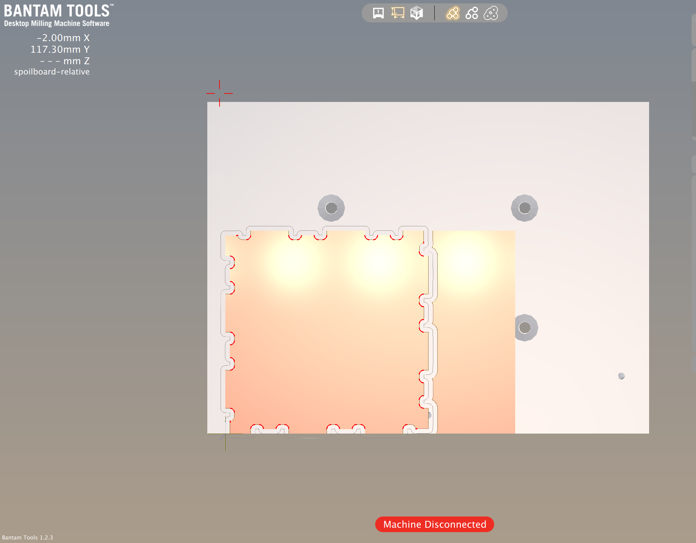
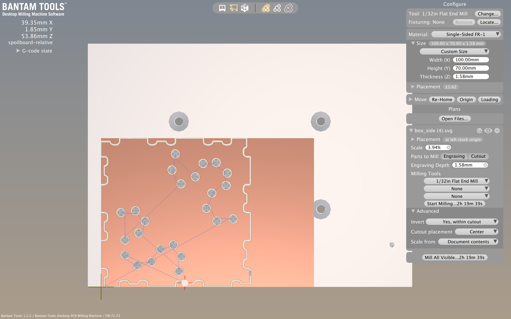
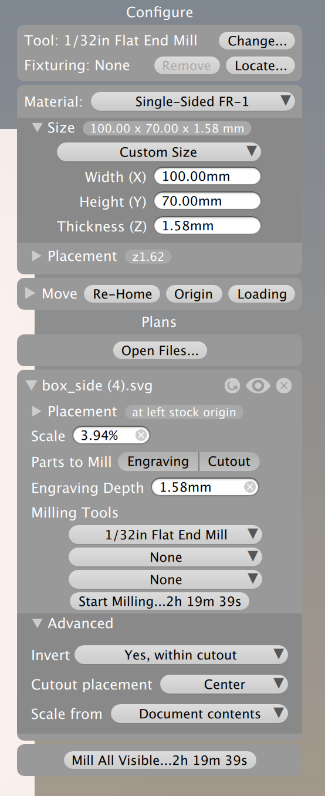
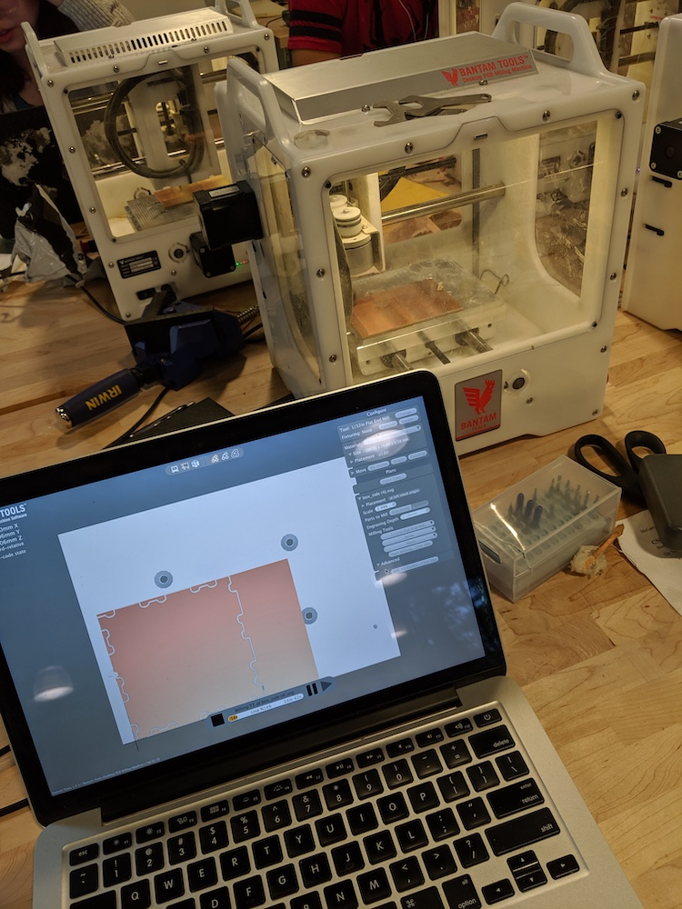
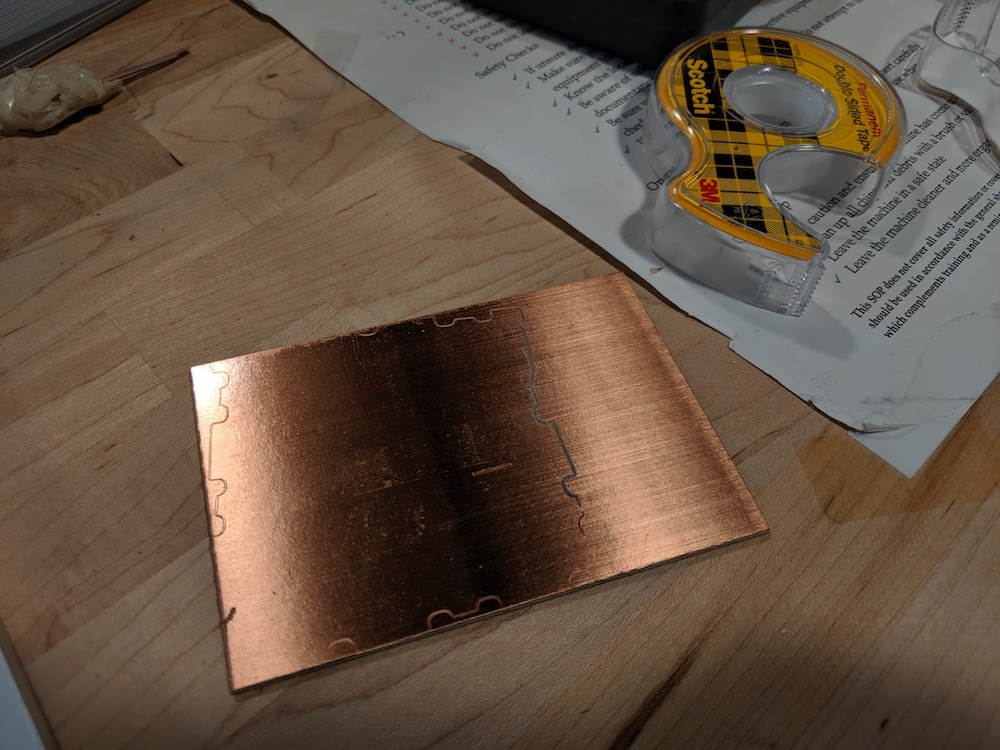
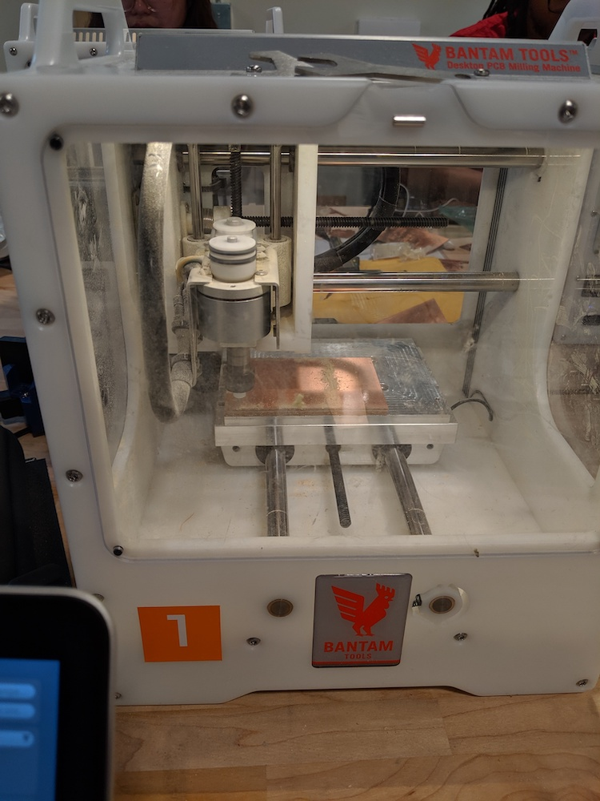

In this assignment, we had to learn CNC milling skills to create a box out of FR1. The assignment prompt was:
Design a box with e.g. fingerjoints, tabs, or another joining method that can be milled out of FR1 on the Othermill. As needed, you may use dogbones or other milling aids. Use Bantam Tools' software.Links to an external site. to generate your g-code. Document your toolpathing method. Mill the box and assemble it.
I didn't have a lot of time this week so I approached this assignment with the goal of making something fairly simple that looked interesting. I've always had difficulty performing the particular bit of 3D mind visualization wizardry for joints. I get particularly stumped by how multiple parts can intersect with one another in several dimensions. The link provided in the problem description was quite helpful in giving concrete examples for different types of joints. I really liked the look of the finger joints and thought it would be nice to use the same edge for all of my parts. I found a few images that I liked online and added more content to my Pinterest board for this class.
I ended up picking a minimalist joint pattern that would show a few fingers on each side. My original intention was to make a simple box with this pattern on the sides and bottom and an easy press fit top. The brainstorming to get to this point is shown below:
Starting out in OnShape, I made a simple square piece extruded to 1.56mm thickness (the size of my FR1). I had planned my finger joint pattern in advance and was able to calculate the total number of fingers I would need for each side. I then divided the length of the side by the number of fingers to get the width for each finger of the joint.
Once I had properly dimensioned and extruded the fingers on one side, I rotated the extruded side around the piece so that all sides would be the same. I had to do some additional sketching to ensure that all of the sides would line up properly when combined into a final box. I figured out that I would need to take more material off the bottom of the sides so that all of the pieces would fit together. Due to the constraints of the round drill, I ended up with one more finger per side than I wanted. I decided to embrace this as a feature instead of trying something fancy with dogbones, mostly for the sake of consistency within the design.
At this point, I had a bit of extra time and wanted to make the piece slightly fancier. I knew the constraints of the CNC mill and decided to make a pattern across the face of all sides of the cube. Browsing through Pinterest showed me a lot of past projects where people would make cube night lights with each face displaying characters from popular TV shows. I wanted something a bit more abstract and elegant so I decided on a curved dot pattern across each face.
I spent quite a bit of time drawing the curves so that they would line up with one another from face to face. The result was a wave pattern across the cube. This involved patterning an extruded circle along the curves of each face.
Finally, I took inspiration from some of the Pinterest posts and quickly created another face with a hole in the bottom to accommodate a light fixture. I wanted to give myself the option of turning this into a lamp. It might have been several assignments too late, but you can never have too many gorgeous, digitally fabricated lights!
Here is the link to the OnShape file for the project.
Due to challenges with installing KiCad on my work computer, I chose to clean up my OnShape DXF files in Illustrator and turn them into SVGs. In Illustrator, I joined all external paths for the face of my box. I also used the Pathfinder -> Exclude setting as recommended by @JoshuaV. I then imported those SVGs into the BantamTools program. This was where I faced some challenges.
Despite being present in the SVG file, the holes I had planned to cut into the face of my FR1 did not show up in the Bantam software. To troubleshoot, I went back to Illustrator to ensure everything was a path and all paths had been exported in the SVG file. After a very long time, I realized that a few external lines had not been joined to the outside of the shape. I went back and fixed all the connections and finally got the holes to show up in the Bantam software. Initially, the software wanted to cut everything besides the holes. I got the correct configuration by inverting the cutout. However, the time to print would have been over 2 hours.
I decided to print the box sides without the engraving. The dimensions of my FR1 were 70x100x1.58mm and I added .02mm to account for the double sided tape. I elevated the material 1.58mm above the bed of the CNC mill. I set my toolpath to be in the center of the material because that was how I had designed my part. I used a 1/32in flat end mill. Thanks to Christa Keiser for helping me set up the mill!
I connected my computer to the CNC mill and started cutting.
Unfortunately, I didn't realize that I needed to use a lot more double stick tape than I thought.
I tried again with loads of tape. Thankfully, the pieces cut a lot better. I ended up with an un-engraved box!
When researching for this project, I found so many intersting joint designs. I was particularly drawn to joints with contrasting colors of wood and designs involving thicker materials. When not constrained by time or material, I would like to explore more styles of joints.